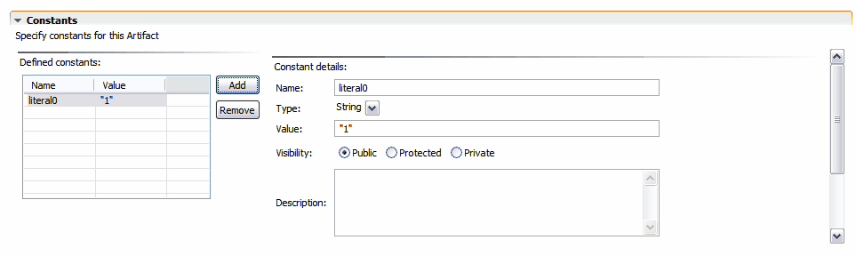

Named Query Constants
To edit named query constants, expand the Constants section in the Tigerstripe Query Artifact editor. The Constants section is shown below:

To add a constant:
- Click Add. A sample constant is created and the detailed information for the constant displays in the Query Artifact editor.
To remove a constant:
- Select the constant from the list of defined constants.
- Click Remove. A confirmation dialog appears to confirm the removal of the selected constant.
To edit a constant:
- Select the constant from the list of defined constants.
The detailed view for the selected constant displays. You can edit the following information:
- Constant Name: This is the name of the constant. This must be a valid identifier and cannot contain spaces or special characters. The identifier must be unique within the context of the Artifact.
- Constant Type: The type of constant. Valid constant types are String and int. The constant types are mapped to the corresponding type for the XML and WSDL profiles.
- Constant Value: The value for the constant. If the selected type for the constant is String, the given value must be surrounded by quotes (").
- Constant Visibility: defines the visibility of the constant.
- Constant Description: a textual description of the constant. This field documents the purpose of the constant. You can use HTML code in the field as it will be propagated into the web site where the project is to be published, as well as in the generated code. For more details on Artifact documentation, refer to Tigerstripe Model Documentation.
Related Topics
Creating New Named Query Artifacts
Editing New Named Query Artifacts
New Named Query Artifact General Information
New Named Query Attributes
New Named Query Implementation Specifics
 New Named Query Implementation Specifics
New Named Query Implementation Specifics
© copyright 2005, 2006, 2007 Cisco Systems, Inc. - All rights reserved